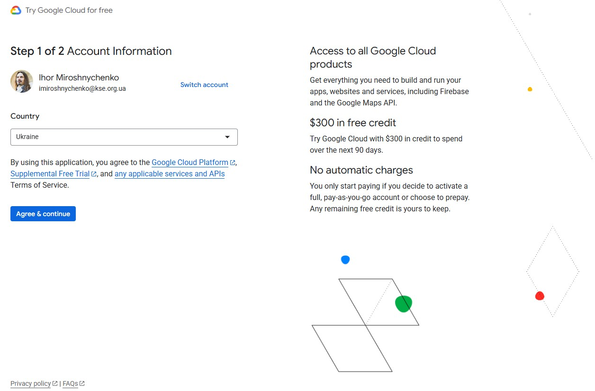
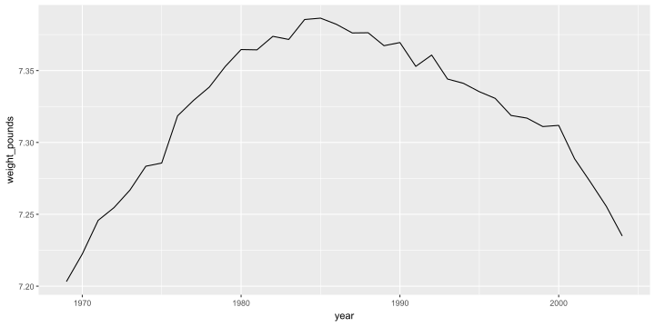
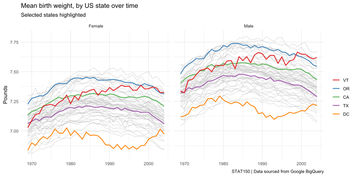

library(googlesheets4)
library(tidyverse)Advanced imports and data manipulations
STAT150 | R for Data Science
Ihor Miroshnychenko
Kyiv School of Economics
Google Sheets
Prerequisites
Reading data
read_sheet()reads data from a Google Sheet into a tibble.range_read()reads a specific range of cells.gs4_create()creates a new Google Sheet.sheet_write()writes data to a Google Sheet.
Authentication
- The first time you use
googlesheets4, it will prompt you to authenticate with your Google account. - You can use
gs4_auth()to manage authentication. - Use
gs4_deauth()to access public sheets without authentication.
Sheet ID Extraction
(?<=/d/): ensures the match comes after/d/[a-zA-Z0-9-_]+: matches one or more characters that are either uppercase letters, lowercase letters, digits, hyphens, or underscores
Reading a Sheet
# A tibble: 57 × 6
Name email Roles Groups `Last access` Status
<chr> <chr> <chr> <chr> <chr> <chr>
1 Anna Akhlamova aakhlamova@kse.org.ua Stud… Group… 1 hour 24 mi… Active
2 Diana Aldoshyna daldoshyna@kse.org.ua Stud… Group… 1 day 10 hou… Active
3 Iryna Androshchuk iandroshchuk@kse.org.… Stud… Group… 1 day 3 hours Active
4 Taras Baraniuk tbaraniuk@kse.org.ua Stud… Group… 2 days 4 hou… Active
5 Nikita Bezverkhyi nbezverkhyi@kse.org.ua Stud… Group… 2 days 21 ho… Active
6 Andrii Boichuk aboichuk@kse.org.ua Stud… Group… 2 hours 37 m… Active
7 Maryna Bondar mbondar@kse.org.ua Stud… Group… 2 days 7 hou… Active
8 Liliia Chervonetska lchervonetska@kse.org… Stud… Group… 50 mins 20 s… Active
9 Sofiia Danilova sdanilova@kse.org.ua Stud… Group… 1 day 22 hou… Active
10 Marharyta Filipovych mfilipovych@kse.org.ua Stud… Group… 17 mins 19 s… Active
# ℹ 47 more rowsExamples from the package
# A tibble: 10 × 6
Name Profession Age `Has kids` `Date of birth` `Date of death`
<chr> <chr> <dbl> <lgl> <dttm> <dttm>
1 David Bo… musician 69 TRUE 1947-01-08 00:00:00 2016-01-10 00:00:00
2 Carrie F… actor 60 TRUE 1956-10-21 00:00:00 2016-12-27 00:00:00
3 Chuck Be… musician 90 TRUE 1926-10-18 00:00:00 2017-03-18 00:00:00
4 Bill Pax… actor 61 TRUE 1955-05-17 00:00:00 2017-02-25 00:00:00
5 Prince musician 57 TRUE 1958-06-07 00:00:00 2016-04-21 00:00:00
6 Alan Ric… actor 69 FALSE 1946-02-21 00:00:00 2016-01-14 00:00:00
7 Florence… actor 82 TRUE 1934-02-14 00:00:00 2016-11-24 00:00:00
8 Harper L… author 89 FALSE 1926-04-28 00:00:00 2016-02-19 00:00:00
9 Zsa Zsa … actor 99 TRUE 1917-02-06 00:00:00 2016-12-18 00:00:00
10 George M… musician 53 FALSE 1963-06-25 00:00:00 2016-12-25 00:00:00Writing to a Sheet
sheet_write()writes a data frame to a specified sheet within a Google Sheets document.
Databases
Prerequisites
if (!requireNamespace("pacman")) install.packages("pacman")
pacman::p_load(
DBI,
duckdb,
arrow,
tidyverse
)
Sys.setenv(NOT_CRAN = "true")
if (!requireNamespace("polars")) install.packages("polars", repos = "https://community.r-multiverse.org")
if (!requireNamespace("tidypolars")) install.packages("tidypolars", repos = "https://community.r-multiverse.org")Types of Databases
- Row-oriented databases (e.g., PostgreSQL, MySQL, SQLite)
- Suitable for transactional applications
- Column-oriented databases (e.g., DuckDB, ClickHouse)
- Optimized for analytical queries
- Store data in columns rather than rows
Types of DBMS
DBMS (Database Management System) is software for creating and managing databases.
- Client-server:
- PostgreSQL, MySQL, Microsoft SQL Server, Oracle Database
- Cloud:
- Amazon RedShift, Google BigQuery, Snowflake
- In-process:
- SQLite, DuckDB
NYC taxi data
We will use New York City taxi data.
- Yellow taxi trips in NYC for the year 2012
- Data is partitioned by month
- Each month’s data is stored in a separate Parquet file
- Parquet is a columnar storage file format optimized for use with big data processing frameworks
- The final dataset is ~8.5 GB compressed on disk and can take 10-20 minutes to download, depending on your internet connection.
NYC taxi data sources
library(googledrive)
library(purrr)
data_path = "nyc-taxi"
jp_folder = "https://drive.google.com/drive/folders/1t4gHy4eJM47nQE3Z2mh4tid6eLbl6goJ"
folder_id = drive_get(as_id(jp_folder))
files = drive_ls(folder_id)
pmap(files, function(name, id, ...) { #
local_dir <- file.path(data_path, name)
dir.create(local_dir, recursive = TRUE, showWarnings = FALSE)
# список файлів у підпапці
i_dir <- drive_ls(as_id(id))
# завантаження файлів
pwalk(list(i_dir$id, i_dir$name), function(file_id, file_name) {
try({
drive_download(
as_id(file_id),
path = file.path(local_dir, file_name),
overwrite = FALSE
)
})
})
})File structure
fspackage provides cross-platform file system operations
nyc-taxi
├── month=1
│ └── part-0.parquet
├── month=10
│ └── part-0.parquet
├── month=11
│ └── part-0.parquet
├── month=12
│ └── part-0.parquet
├── month=2
│ └── part-0.parquet
├── month=3
│ └── part-0.parquet
├── month=4
│ └── part-0.parquet
├── month=5
│ └── part-0.parquet
├── month=6
│ └── part-0.parquet
├── month=7
│ └── part-0.parquet
├── month=8
│ └── part-0.parquet
└── month=9
└── part-0.parquetSize on disk
- Calculate the total size of all Parquet files in the
nyc-taxidirectory and its subdirectories
Machine specs
benchmarkmepackage provides functions to benchmark your R setup and get system information
DuckDB
Load libraries
DBIprovides a common interface for interacting with databases in R.duckdbis an in-process SQL OLAP database management system.dbConnect()establishes a connection to a DuckDB database.
Bigger than RAM
- DuckDB is designed to handle datasets larger than the available RAM.
- It uses efficient on-disk storage and processing techniques to manage large datasets.
- It employs vectorized execution and columnar storage to optimize performance.
First example
What is the average tip per passenger count?
DuckDB’s “friendly SQL”
- DuckDB allows you to use a more concise SQL syntax for certain operations.
Let’s run it
passenger_count mean_tip
1 0 0.8620988
2 1 1.1510110
3 2 1.0815798
4 3 0.9629494
5 4 0.8445190
6 5 1.1027325
7 6 1.1283649
8 7 0.5441176
9 8 0.3507692
10 9 0.8068000
11 10 0.0000000
12 65 0.0000000
13 66 1.5000000
14 177 1.0000000
15 208 0.0000000
16 247 2.3000000
17 249 0.0000000
18 254 0.0000000Time difference of 0.4330502 secsWow! ~20 millions of rows in that dataset!
Aggregation
How does the average tip change over the months?
Why it faster than the previous query? Reason: Subsetting along our Hive-partitioned parquet dataset allows DuckDB to take shortcuts.
EXPLAIN query plan
EXPLAINprovides a detailed query execution plan, showing how DuckDB will execute the SQL query.
physical_plan
┌───────────────────────────┐
│ HASH_GROUP_BY │
│ ──────────────────── │
│ Groups: │
│ #0 │
│ #1 │
│ │
│ Aggregates: avg(#2) │
│ │
│ ~43,566,944 rows │
└─────────────┬─────────────┘
┌─────────────┴─────────────┐
│ PROJECTION │
│ ──────────────────── │
│ month │
│ passenger_count │
│ tip_amount │
│ │
│ ~43,566,945 rows │
└─────────────┬─────────────┘
┌─────────────┴─────────────┐
│ PARQUET_SCAN │
│ ──────────────────── │
│ Function: │
│ PARQUET_SCAN │
│ │
│ Projections: │
│ month │
│ passenger_count │
│ tip_amount │
│ │
│ File Filters: │
│ (month <= 3) │
│ │
│ Scanning Files: 3/12 │
│ │
│ ~43,566,945 rows │
└───────────────────────────┘More examples
What is the average tip and fare per passenger count and trip distance?
Pivot
UNPIVOTtransforms columns into rows, effectively rotating the data.PIVOTtransforms rows into columns, allowing for aggregation of data.
tic = Sys.time()
dat_long = dbGetQuery(
con,
"
WITH tmp_table AS (
FROM 'nyc-taxi/**/*.parquet'
SELECT
passenger_count,
trip_distance,
AVG(tip_amount) AS mean_tip,
AVG(fare_amount) AS mean_fare
GROUP BY ALL
)
UNPIVOT tmp_table
ON mean_tip, mean_fare
INTO
NAME variable
VALUE amount
"
)
toc = Sys.time()
head(dat_long)Create new tables
CREATE TABLE AScreates a new table and populates it with the result of a query.
Back to reshaping
UNPIVOTon the newly created table
Joins
What this query does?
tic = Sys.time()
dbGetQuery(
con,
"
WITH
mean_tips AS (
FROM 'nyc-taxi/**/*.parquet'
SELECT
month,
AVG(tip_amount) AS mean_tip
GROUP BY month
),
mean_fares AS (
FROM 'nyc-taxi/**/*.parquet'
SELECT
month,
AVG(fare_amount) AS mean_fare
GROUP BY month
)
FROM mean_tips
LEFT JOIN mean_fares
USING (month)
SELECT *
ORDER BY mean_tips.month
"
) month mean_tip mean_fare
1 1 1.007817 9.813488
2 2 1.036874 9.942640
3 3 1.056353 10.223107
4 4 1.043167 10.335490
5 5 1.078014 10.585157
6 6 1.091082 10.548651
7 7 1.059312 10.379943
8 8 1.079521 10.492650
9 9 1.254601 12.391198
10 10 1.281239 12.501252
11 11 1.250903 12.270138
12 12 1.237651 12.313953Time difference of 0.6777279 secsWindowing
OVERclause defines a window (set of rows) for the function to operate on.
What is the average tip and trip distance for each decile of trip distance?
tic = Sys.time()
dbGetQuery(
con,
"
WITH trip_deciles AS (
FROM 'nyc-taxi/**/*.parquet'
SELECT
tip_amount,
trip_distance,
NTILE(10) OVER (ORDER BY trip_distance) AS decile
USING SAMPLE 1%
)
FROM trip_deciles
SELECT
decile,
AVG(trip_distance) AS mean_distance,
AVG(tip_amount) AS mean_tip
GROUP BY ALL
ORDER BY ALL
"
) decile mean_distance mean_tip
1 1 0.4501200 0.5953704
2 2 0.8095263 0.5275423
3 3 1.0665073 0.6240212
4 4 1.3274623 0.6988039
5 5 1.6314589 0.8093736
6 6 2.0007439 0.9075431
7 7 2.5019330 1.0567034
8 8 3.2664206 1.2694573
9 9 4.7659400 1.6398708
10 10 11.0340217 3.3354441Time difference of 1.429759 secsWarning
I’m using a 1% random sample of my data here (see the USING SAMPLE 1% statement). Why?
Close connection
DuckDB + dplyr
Load libraries
Create a database connection
dplyr::tbl()creates a lazy table reference to a database table.
con <- dbConnect(duckdb(), shutdown = TRUE)
1nyc <- tbl(con, "read_parquet('nyc-taxi/**/*.parquet', hive_partitioning = true)")- 1
-
nyc = tbl(con, "nyc-taxi/**/*.parquet")will also work, but safer to use the read_parquet function.
First example
This next command runs instantly because all computation is deferred (i.e., lazy eval). In other words, it is just a query object.
Explaining the query
explain()shows the SQL query that will be sent to the database when the query is executed.
<SQL>
SELECT passenger_count, AVG(tip_amount) AS mean_tip
FROM (FROM read_parquet('nyc-taxi/**/*.parquet', hive_partitioning = true)) q01
GROUP BY passenger_count
<PLAN>
physical_plan
┌───────────────────────────┐
│ HASH_GROUP_BY │
│ ──────────────────── │
│ Groups: #0 │
│ Aggregates: avg(#1) │
│ │
│ ~110,158,246 rows │
└─────────────┬─────────────┘
┌─────────────┴─────────────┐
│ PROJECTION │
│ ──────────────────── │
│ passenger_count │
│ tip_amount │
│ │
│ ~174,267,780 rows │
└─────────────┬─────────────┘
┌─────────────┴─────────────┐
│ READ_PARQUET │
│ ──────────────────── │
│ Function: │
│ READ_PARQUET │
│ │
│ Projections: │
│ passenger_count │
│ tip_amount │
│ │
│ ~174,267,780 rows │
└───────────────────────────┘Show the SQL query
show_query()displays the SQL query that will be executed.
Execute the query
collect()executes the query and retrieves the results into R.
Aggregation
How does the average tip and fare change over the months and passenger count?
# Source: SQL [?? x 4]
# Database: DuckDB 1.4.0 [ihorm@Windows 10 x64:R 4.4.1/:memory:]
month passenger_count tip_amount fare_amount
<dbl> <dbl> <dbl> <dbl>
1 3 208 0 3.3
2 1 7 0 6.3
3 2 2 0.991 10.2
4 3 3 0.912 10.3
5 3 6 1.05 10.3
6 1 0 0.842 8.66
7 1 5 1.00 9.85
8 1 9 0 2.5
9 1 65 0 45
10 1 4 0.768 10.0
# ℹ more rowsExplain the query
<SQL>
SELECT
"month",
passenger_count,
AVG(tip_amount) AS tip_amount,
AVG(fare_amount) AS fare_amount
FROM (
SELECT q01.*
FROM (FROM read_parquet('nyc-taxi/**/*.parquet', hive_partitioning = true)) q01
WHERE ("month" <= 3.0)
) q01
GROUP BY "month", passenger_count
<PLAN>
physical_plan
┌───────────────────────────┐
│ HASH_GROUP_BY │
│ ──────────────────── │
│ Groups: │
│ #0 │
│ #1 │
│ │
│ Aggregates: │
│ avg(#2) │
│ avg(#3) │
│ │
│ ~43,566,944 rows │
└─────────────┬─────────────┘
┌─────────────┴─────────────┐
│ PROJECTION │
│ ──────────────────── │
│ month │
│ passenger_count │
│ tip_amount │
│ fare_amount │
│ │
│ ~43,566,945 rows │
└─────────────┬─────────────┘
┌─────────────┴─────────────┐
│ READ_PARQUET │
│ ──────────────────── │
│ Function: │
│ READ_PARQUET │
│ │
│ Projections: │
│ passenger_count │
│ fare_amount │
│ tip_amount │
│ month │
│ │
│ File Filters: │
│ (month <= 3) │
│ │
│ Scanning Files: 3/12 │
│ │
│ ~43,566,945 rows │
└───────────────────────────┘More aggregation
# A tibble: 25,569 × 4
# Groups: passenger_count [18]
passenger_count trip_distance tip_amount fare_amount
<dbl> <dbl> <dbl> <dbl>
1 1 0.9 0.579 5.69
2 1 1.34 0.691 7.01
3 1 3.41 1.28 12.6
4 1 0.81 0.513 5.40
5 1 0.83 0.520 5.48
6 1 2.09 0.924 9.16
7 1 2.3 1.04 9.74
8 1 0.1 0.527 6.08
9 2 6.8 1.98 20.7
10 1 2.39 1.01 9.93
# ℹ 25,559 more rowsPivot
# A tibble: 51,138 × 4
# Groups: passenger_count [18]
passenger_count trip_distance name value
<dbl> <dbl> <chr> <dbl>
1 3 0.29 tip_amount 0.302
2 1 1.5 tip_amount 0.786
3 1 1.47 tip_amount 0.736
4 1 12.5 tip_amount 3.56
5 1 1.68 tip_amount 0.807
6 1 1.82 tip_amount 0.850
7 5 1.16 tip_amount 0.617
8 1 2.35 tip_amount 0.996
9 1 3.88 tip_amount 1.42
10 1 2.5 tip_amount 1.10
# ℹ 51,128 more rowsJoins
# A tibble: 12 × 3
month mean_fares mean_tips
<dbl> <dbl> <dbl>
1 8 10.5 1.08
2 9 12.4 1.25
3 7 10.4 1.06
4 6 10.5 1.09
5 3 10.2 1.06
6 5 10.6 1.08
7 1 9.81 1.01
8 2 9.94 1.04
9 12 12.3 1.24
10 4 10.3 1.04
11 11 12.3 1.25
12 10 12.5 1.28Windowing
Caution
Sampling with dplyr is less efficient than DuckDB’s native USING SAMPLE SQL, so creating deciles on large data may be slower.
Arrow + duckdb
Load libraries
arrowprovides a high-performance interface for reading and writing Parquet files.
Dataset
With arrow, you can access the dataset directly using open_dataset() - no need to connect to a database.
Take a look
Printing nyc2 shows its column names and types.
FileSystemDataset with 12 Parquet files
23 columns
vendor_name: string
pickup_datetime: timestamp[ms]
dropoff_datetime: timestamp[ms]
passenger_count: int64
trip_distance: double
pickup_longitude: double
pickup_latitude: double
rate_code: string
store_and_fwd: string
dropoff_longitude: double
dropoff_latitude: double
payment_type: string
fare_amount: double
extra: double
mta_tax: double
tip_amount: double
tolls_amount: double
total_amount: double
improvement_surcharge: double
congestion_surcharge: double
...
3 more columns
Use `schema()` to see entire schemaTo duckdb
Use to_duckdb() to convert the Arrow dataset for use with DuckDB and dplyr.
Arrow and DuckDB work together efficiently — no data is copied, just pointers are shared for fast access.
# Source: table<arrow_001> [?? x 23]
# Database: DuckDB 1.4.0 [ihorm@Windows 10 x64:R 4.4.1/:memory:]
vendor_name pickup_datetime dropoff_datetime passenger_count
<chr> <dttm> <dttm> <dbl>
1 CMT 2012-01-20 14:09:36 2012-01-20 14:42:25 1
2 CMT 2012-01-20 14:54:10 2012-01-20 15:06:55 1
3 CMT 2012-01-20 08:08:01 2012-01-20 08:11:02 1
4 CMT 2012-01-20 08:36:22 2012-01-20 08:39:44 1
5 CMT 2012-01-20 20:58:32 2012-01-20 21:03:04 1
6 CMT 2012-01-20 19:40:20 2012-01-20 19:43:43 2
7 CMT 2012-01-21 01:54:37 2012-01-21 02:08:02 2
8 CMT 2012-01-21 01:55:47 2012-01-21 02:08:51 3
9 VTS 2012-01-07 22:20:00 2012-01-07 22:27:00 2
10 VTS 2012-01-10 07:11:00 2012-01-10 07:21:00 1
# ℹ more rows
# ℹ 19 more variables: trip_distance <dbl>, pickup_longitude <dbl>,
# pickup_latitude <dbl>, rate_code <chr>, store_and_fwd <chr>,
# dropoff_longitude <dbl>, dropoff_latitude <dbl>, payment_type <chr>,
# fare_amount <dbl>, extra <dbl>, mta_tax <dbl>, tip_amount <dbl>,
# tolls_amount <dbl>, total_amount <dbl>, improvement_surcharge <dbl>,
# congestion_surcharge <dbl>, pickup_location_id <dbl>, …Example
All dplyr verbs work as expected.
# A tibble: 18 × 2
passenger_count mean_tip
<dbl> <dbl>
1 247 2.3
2 249 0
3 5 1.10
4 9 0.807
5 65 0
6 177 1
7 1 1.15
8 8 0.351
9 66 1.5
10 208 0
11 10 0
12 2 1.08
13 3 0.963
14 6 1.13
15 7 0.544
16 0 0.862
17 254 0
18 4 0.845Experimental: duckplyr
duckplyr is a new package that lets you use dplyr syntax, but powered by DuckDB for fast data manipulation.
You can swap library(dplyr) for library(duckplyr) and get efficient queries, even on regular R data frames.
# A duckplyr data frame: 2 variables
passenger_count mean_tip
<dbl> <dbl>
1 249 0
2 2 1.08
3 247 2.3
4 0 0.862
5 254 0
6 4 0.845
7 8 0.351
8 66 1.5
9 208 0
10 10 0
11 3 0.963
12 6 1.13
13 1 1.15
14 7 0.544
15 5 1.10
16 9 0.807
17 65 0
18 177 1 Polars
Load libraries
polarsis a fast DataFrame library implemented in Rust.
Scan data
scan_parquet()reads Parquet files into a Polars DataFrame.
First example
Polars operations are registered as queries until they are collected.
Polars style
Polars chains methods with $, similar to Python. For multiline queries, wrap in parentheses and put each method on a new line.
Collect the result
collect()executes the query and retrieves the results into R.
shape: (18, 2)
┌─────────────────┬────────────┐
│ passenger_count ┆ tip_amount │
│ --- ┆ --- │
│ i64 ┆ f64 │
╞═════════════════╪════════════╡
│ 0 ┆ 0.862099 │
│ 1 ┆ 1.151011 │
│ 2 ┆ 1.08158 │
│ 3 ┆ 0.962949 │
│ 4 ┆ 0.844519 │
│ … ┆ … │
│ 177 ┆ 1.0 │
│ 208 ┆ 0.0 │
│ 247 ┆ 2.3 │
│ 249 ┆ 0.0 │
│ 254 ┆ 0.0 │
└─────────────────┴────────────┘Time difference of 0.6528399 secsAggregation
- How does the average tip change over the months and passenger count?
q2is a query object until collected.q2$explain()shows the optimized query plan.
SORT BY [col("passenger_count")]
AGGREGATE[maintain_order: false]
[col("tip_amount").mean().alias("mean_tip")] BY [col("month"), col("passenger_count")]
FROM
Parquet SCAN [nyc-taxi\month=1\part-0.parquet, ... 11 other sources]
PROJECT 3/23 COLUMNS
SELECTION: [(col("month").cast(Float64)) <= (3.0)]Run and collect
shape: (29, 3)
┌───────┬─────────────────┬──────────┐
│ month ┆ passenger_count ┆ mean_tip │
│ --- ┆ --- ┆ --- │
│ i64 ┆ i64 ┆ f64 │
╞═══════╪═════════════════╪══════════╡
│ 3 ┆ 0 ┆ 0.877675 │
│ 1 ┆ 0 ┆ 0.841718 │
│ 2 ┆ 0 ┆ 0.876637 │
│ 3 ┆ 1 ┆ 1.089205 │
│ 2 ┆ 1 ┆ 1.06849 │
│ … ┆ … ┆ … │
│ 1 ┆ 9 ┆ 0.0 │
│ 2 ┆ 9 ┆ 0.0 │
│ 1 ┆ 65 ┆ 0.0 │
│ 3 ┆ 208 ┆ 0.0 │
│ 1 ┆ 208 ┆ 0.0 │
└───────┴─────────────────┴──────────┘Time difference of 1.037276 secsHigh-dimensional grouping example
- This query provides an example where
polarsis noticeably slower than DuckDB.
shape: (25_569, 4)
┌─────────────────┬───────────────┬──────────┬───────────┐
│ passenger_count ┆ trip_distance ┆ mean_tip ┆ mean_fare │
│ --- ┆ --- ┆ --- ┆ --- │
│ i64 ┆ f64 ┆ f64 ┆ f64 │
╞═════════════════╪═══════════════╪══════════╪═══════════╡
│ 0 ┆ 0.0 ┆ 1.345135 ┆ 17.504564 │
│ 0 ┆ 0.01 ┆ 0.178571 ┆ 34.642857 │
│ 0 ┆ 0.02 ┆ 4.35 ┆ 61.05 │
│ 0 ┆ 0.03 ┆ 16.25 ┆ 74.0 │
│ 0 ┆ 0.04 ┆ 0.03 ┆ 46.5 │
│ … ┆ … ┆ … ┆ … │
│ 208 ┆ 5.1 ┆ 0.0 ┆ 12.5 │
│ 208 ┆ 6.6 ┆ 0.0 ┆ 17.7 │
│ 247 ┆ 3.31 ┆ 2.3 ┆ 11.5 │
│ 249 ┆ 1.69 ┆ 0.0 ┆ 8.5 │
│ 254 ┆ 1.02 ┆ 0.0 ┆ 6.0 │
└─────────────────┴───────────────┴──────────┴───────────┘Time difference of 4.571644 secsPivot
pivot\(\rightarrow\) long to wide transformationunpivot\(\rightarrow\) wide to long transformation
shape: (51_138, 4)
┌─────────────────┬───────────────┬───────────┬──────────┐
│ passenger_count ┆ trip_distance ┆ variable ┆ value │
│ --- ┆ --- ┆ --- ┆ --- │
│ i64 ┆ f64 ┆ str ┆ f64 │
╞═════════════════╪═══════════════╪═══════════╪══════════╡
│ 0 ┆ 0.0 ┆ mean_tip ┆ 1.345135 │
│ 0 ┆ 0.01 ┆ mean_tip ┆ 0.178571 │
│ 0 ┆ 0.02 ┆ mean_tip ┆ 4.35 │
│ 0 ┆ 0.03 ┆ mean_tip ┆ 16.25 │
│ 0 ┆ 0.04 ┆ mean_tip ┆ 0.03 │
│ … ┆ … ┆ … ┆ … │
│ 208 ┆ 5.1 ┆ mean_fare ┆ 12.5 │
│ 208 ┆ 6.6 ┆ mean_fare ┆ 17.7 │
│ 247 ┆ 3.31 ┆ mean_fare ┆ 11.5 │
│ 249 ┆ 1.69 ┆ mean_fare ┆ 8.5 │
│ 254 ┆ 1.02 ┆ mean_fare ┆ 6.0 │
└─────────────────┴───────────────┴───────────┴──────────┘Joins
shape: (12, 3)
┌───────┬────────────┬─────────────┐
│ month ┆ tip_amount ┆ fare_amount │
│ --- ┆ --- ┆ --- │
│ i64 ┆ f64 ┆ f64 │
╞═══════╪════════════╪═════════════╡
│ 5 ┆ 1.078014 ┆ 10.585157 │
│ 2 ┆ 1.036874 ┆ 9.94264 │
│ 6 ┆ 1.091082 ┆ 10.548651 │
│ 8 ┆ 1.079521 ┆ 10.49265 │
│ 11 ┆ 1.250903 ┆ 12.270138 │
│ … ┆ … ┆ … │
│ 7 ┆ 1.059312 ┆ 10.379943 │
│ 3 ┆ 1.056353 ┆ 10.223107 │
│ 12 ┆ 1.237651 ┆ 12.313953 │
│ 1 ┆ 1.007817 ┆ 9.813488 │
│ 9 ┆ 1.254601 ┆ 12.391198 │
└───────┴────────────┴─────────────┘Experimental: tidypolars
tidypolars provides a dplyr-like interface for polars.
library(polars)
library(tidypolars)
library(dplyr, warn.conflicts = FALSE)
library(tidyr, warn.conflicts = FALSE)
nyc = scan_parquet_polars("nyc-taxi/**/*.parquet")
nyc |>
summarise(mean_tip = mean(tip_amount), .by = passenger_count) |>
compute() # collect() -> return a data.frameshape: (18, 2)
┌─────────────────┬──────────┐
│ passenger_count ┆ mean_tip │
│ --- ┆ --- │
│ i64 ┆ f64 │
╞═════════════════╪══════════╡
│ 9 ┆ 0.8068 │
│ 0 ┆ 0.862099 │
│ 3 ┆ 0.962949 │
│ 6 ┆ 1.128365 │
│ 66 ┆ 1.5 │
│ … ┆ … │
│ 5 ┆ 1.102732 │
│ 2 ┆ 1.08158 │
│ 65 ┆ 0.0 │
│ 208 ┆ 0.0 │
│ 247 ┆ 2.3 │
└─────────────────┴──────────┘BigQuery with R
About BigQuery
BigQuery is a serverless, highly scalable, and cost-effective multi-cloud data warehouse designed for business agility.
- Accessibility: Access data from anywhere with an internet connection.
- Economy. Pay only for the storage and compute resources you use.
- Data availability. Several sample tables to get you started. And some public datasets too.
GCP
- You need a Google Cloud Platform (GCP) account.
- Create a new project in the GCP Console.
- Enable the BigQuery API for your project.
Sign up for GCP
Sign up for GCP
Sign up for GCP
Щоб завершити операцію використовуйте код: GOOGLE*MZW 123456Project ID
- You can find your Project ID in the GCP Console dashboard.
Example 1. US birth data
Example 1. US birth data
natality: Describes all United States births registered in the 50 States, the District of Columbia, and New York City from 1969 to 2008.- ~ 22 GB
# Source: SQL [?? x 31]
# Database: BigQueryConnection
source_year year month day wday state is_male child_race weight_pounds
<int> <int> <int> <int> <int> <chr> <lgl> <int> <dbl>
1 2005 2005 5 NA 6 <NA> FALSE NA 7.56
2 2005 2005 6 NA 3 <NA> TRUE NA 4.75
3 2005 2005 11 NA 4 <NA> FALSE NA 7.37
4 2005 2005 6 NA 5 <NA> FALSE NA 7.81
5 2005 2005 5 NA 5 <NA> FALSE NA 3.69
6 2005 2005 10 NA 5 <NA> TRUE NA 6.95
# ℹ 22 more variables: plurality <int>, apgar_1min <int>, apgar_5min <int>,
# mother_residence_state <chr>, mother_race <int>, mother_age <int>,
# gestation_weeks <int>, lmp <chr>, mother_married <lgl>,
# mother_birth_state <chr>, cigarette_use <lgl>, cigarettes_per_day <int>,
# alcohol_use <lgl>, drinks_per_week <int>, weight_gain_pounds <int>,
# born_alive_alive <int>, born_alive_dead <int>, born_dead <int>,
# ever_born <int>, father_race <int>, father_age <int>, record_weight <int>Example 1. US birth data
How has the average birth weight changed over time?
Example 1. US birth data
Example 1. US birth data
Collecting by state
Example 1. US birth data
Which states had the highest average birth weights in 2000 and 2008?
states <- c("CA","DC","OR","TX","VT")
bw_st <- bw_st |> arrange(gender, year)
bw_st |>
ggplot(aes(year, weight_pounds, group=state)) +
geom_line(col="grey75", lwd = 0.25) +
geom_line(
data = bw_st |> filter(state %in% states),
aes(col=fct_reorder2(state, year, weight_pounds)),
lwd=0.75
) +
facet_wrap(~gender) +
scale_color_brewer(palette = "Set1", name=element_blank()) +
labs(
title = "Mean birth weight, by US state over time",
subtitle = "Selected states highlighted",
x = NULL, y = "Pounds",
caption = "STAT150 | Data sourced from Google BigQuery"
) +
theme_minimal()
Example 2. Global Fishing Watch
- Global Fishing Watch (GFW) is a nonprofit organization that uses technology to promote ocean sustainability.
Example 2. Global Fishing Watch
fishing_efforttable contains estimates of fishing effort (in hours) for all industrial fishing vessels with AIS data from 2012 to 2016.
# Source: table<`fishing_effort`> [?? x 8]
# Database: BigQueryConnection
date lat_bin lon_bin flag geartype vessel_hours fishing_hours mmsi_present
<chr> <int> <int> <chr> <chr> <dbl> <dbl> <int>
1 2012-… 5780 1018 DNK trawlers 1.49 1.06 5
2 2012-… 5781 1021 DNK trawlers 2.52 1.58 5
3 2012-… 5781 1028 DNK trawlers 2.38 1.69 5
4 2012-… 5781 1024 DNK trawlers 1.28 1.08 4
5 2012-… 5781 1025 DNK trawlers 5.47 0.464 5
6 2012-… 5781 1015 DNK trawlers 3.10 3.10 5
7 2012-… 5781 1026 DNK trawlers 1.88 1.66 5
8 2012-… 5782 1026 DNK trawlers 1.27 1.27 4
9 2012-… 5782 1023 DNK trawlers 1.23 1.23 4
10 2012-… 5782 1039 DNK trawlers 1.08 0.618 4
# ℹ more rowsExample 2. Global Fishing Watch
Which country had the highest fishing effort?
effort |>
group_by(flag) |>
summarise(total_fishing_hours = sum(fishing_hours, na.rm=TRUE)) |>
arrange(desc(total_fishing_hours)) |>
collect()# A tibble: 126 × 2
flag total_fishing_hours
<chr> <dbl>
1 CHN 57711389.
2 ESP 8806223.
3 ITA 6790417.
4 FRA 6122613.
5 RUS 5660001.
6 KOR 5585248.
7 TWN 5337054.
8 GBR 4383738.
9 JPN 4347252.
10 NOR 4128516.
# ℹ 116 more rowsExample 2. Global Fishing Watch
resolution <- 1
globe <-
effort |>
filter(fishing_hours > 0) |>
mutate(
lat_bin = lat_bin/100,
lon_bin = lon_bin/100
) |>
mutate(
lat_bin_center = floor(lat_bin/resolution)*resolution + 0.5*resolution,
lon_bin_center = floor(lon_bin/resolution)*resolution + 0.5*resolution
) |>
group_by(lat_bin_center, lon_bin_center) |>
summarise(fishing_hours = sum(fishing_hours, na.rm=TRUE)) |>
collect()
dbDisconnect(gfw_con)globe |>
filter(fishing_hours > 1) |>
ggplot() +
geom_tile(aes(x=lon_bin_center, y=lat_bin_center, fill=fishing_hours))+
scale_fill_viridis_c(
name = "Fishing hours (log scale)",
trans = "log",
breaks = scales::log_breaks(n = 5, base = 10),
labels = scales::comma
) +
labs(
title = "Global fishing effort",
subtitle = paste0("Effort binned at the ", resolution, "° level."),
y = NULL, x = NULL,
caption = "STAT150 | Data from Global Fishing Watch"
) +
theme_minimal() +
theme(axis.text=element_blank())Example 2. Global Fishing Watch

Questions?